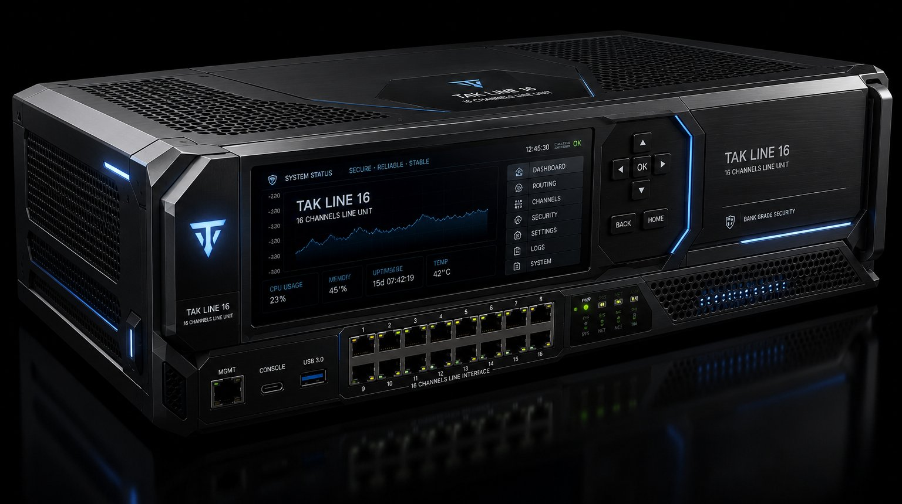
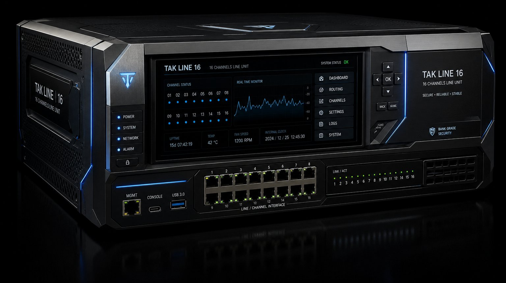

16-Channel Network Architecture
Sixteen isolated monitoring domains with dedicated buffering and independent policy scope. Cross-channel contention is structurally impossible.
ISOLATED DOMAINSOne intelligent infrastructure. Sixteen independent channels. Complete visibility across your network.

CHANNEL FABRIC16 × 10G MANAGEMENT PLANETLS 1.3 / mTLS ON-DEVICE CONSOLE3.2″ STATUS01 Overview
TAK LINE 16 consolidates network discovery, traffic intelligence and infrastructure diagnostics into a single rack-mounted appliance. Sixteen physically independent channels are monitored, configured and audited from one console — so operators observe the entire estate instead of stitching together a dozen partial views.

A 2U chassis houses sixteen line interfaces, a dedicated telemetry path and an isolated management plane. Each channel keeps its own buffer, policy scope and event stream, so a fault or configuration change on one segment never degrades visibility on another.
The appliance is designed around a simple operating principle: observe first, decide second. Discovery, baselining and anomaly detection run continuously; configuration changes are staged, signed and reversible.
Continuous topology discovery, device fingerprinting and behavioural baselining across every monitored segment.
Availability, latency and session-count observation for approved transaction endpoints — metadata only, never credentials or card data.
One policy model, sixteen execution points. Roll out, compare and roll back configuration from a single authoritative console.
02 Technology
Six subsystems, one deterministic data path. Every layer is instrumented, every state change is attributable, and nothing depends on a cloud control plane to remain observable.
Sixteen isolated monitoring domains with dedicated buffering and independent policy scope. Cross-channel contention is structurally impossible.
ISOLATED DOMAINSLayer 2 and Layer 3 topology mapping with vendor and model fingerprinting for up to 4,096 concurrent endpoints.
L2 / L3 TOPOLOGYPer-channel flow accounting at one-second resolution, with thirty days of on-device retention and exportable baselines.
1 S GRANULARITYSigned configuration profiles, staged deployment and one-step rollback, with a full change ledger per interface.
SIGNED PROFILESRead-only observation of authorized transaction telemetry: endpoint availability, session counts and response latency.
METADATA ONLYContinuous self-test across fabric, optics, thermal and power domains, with guided fault isolation and pre-failure alerting.
CONTINUOUS SELF-TEST03 System
A working front-end simulation of the TEC 2248 management plane. Select any channel to isolate its telemetry, or pause the feed to inspect a moment in time.
Select a channel to isolate telemetry
All values are fictional sample data generated locally in the browser. TEC 2248 is a concept prototype and does not connect to banking systems, payment networks or production infrastructure.
04 Specifications
Figures below describe the TEC 2248 concept architecture. Items marked Concept are illustrative design parameters; items marked Target are engineering goals for a future build. Neither constitutes a verified capability.
| Parameter | Specification | Status |
|---|---|---|
| Network channels | 16 independent monitoring domains | Concept |
| Channel interface | 16 × 10G SFP+ / RJ-45 combo, 2 × 40G uplink | Target |
| Aggregate fabric | 640 Gb/s non-blocking telemetry path | Target |
| Monitoring resolution | 1-second flow granularity per channel | Concept |
| Flow retention | 30 days on-device; 12 months with expansion shelf | Concept |
| Device discovery | Up to 4,096 concurrent endpoints, L2/L3 topology | Concept |
| Management plane | TLS 1.3 with mutual authentication, role-based access | Target |
| Configuration model | Signed profiles, staged rollout, one-step rollback | Target |
| Diagnostics | Continuous self-test with guided fault isolation | Concept |
| Health domains | Fabric, optics, thermal, power, storage | Concept |
| Processing | 16-core control plane, dedicated telemetry pipeline | Target |
| Form factor | 2U rack mount — 440 × 88 × 420 mm | Concept |
| Power | Dual redundant 750 W, hot-swap | Target |
| Operating environment | 0–45 °C, 5–90% RH non-condensing | Concept |
No certification, benchmark or third-party validation is claimed for any parameter above.
05 Security
Access, transport, configuration and audit are treated as one continuous control surface. Every session is attributable, every change is recorded, and every privilege is explicitly granted rather than inherited.
Role-based authorization with hardware-backed key storage. Administrative access requires multi-factor authentication and is scoped per channel group.
All management sessions are carried over TLS 1.3 with mutual certificate authentication. Legacy plaintext protocols are not exposed on any interface.
The running configuration is continuously attested against the signed baseline. Unapproved drift raises an event and can trigger automatic isolation of the affected channel.
Authentication, configuration and link-state events are normalized into a single stream with configurable retention and export to an external collector.
Least-privilege by default, time-bound elevation for maintenance windows, and a complete audit trail for every command executed on the appliance.
06 Contact
Request the concept brief, the technical whitepaper or a walkthrough of the management console architecture.
TAK LINE 16 is a fictional product concept developed as a design and engineering demonstration. It is not offered for sale, and no commercial relationship is implied.